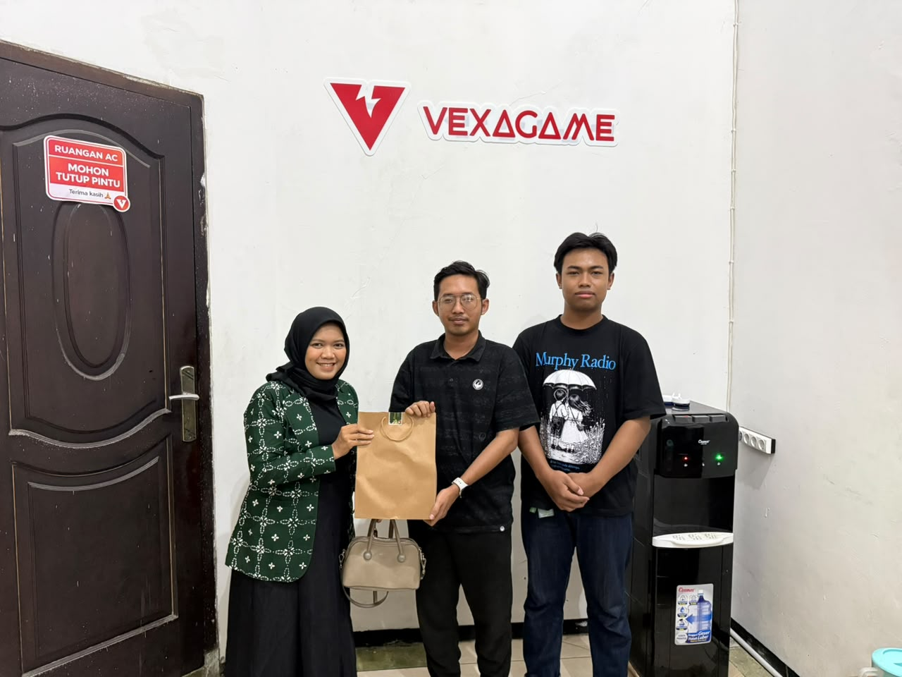

Junior Web Developer & Graphic Designer
PT. Vexa Digital Solutions · Magang / PKL

Merancang dan membangun website toko online responsif, dari integrasi katalog produk hingga optimasi antarmuka pengguna untuk pengalaman belanja digital yang fungsional.